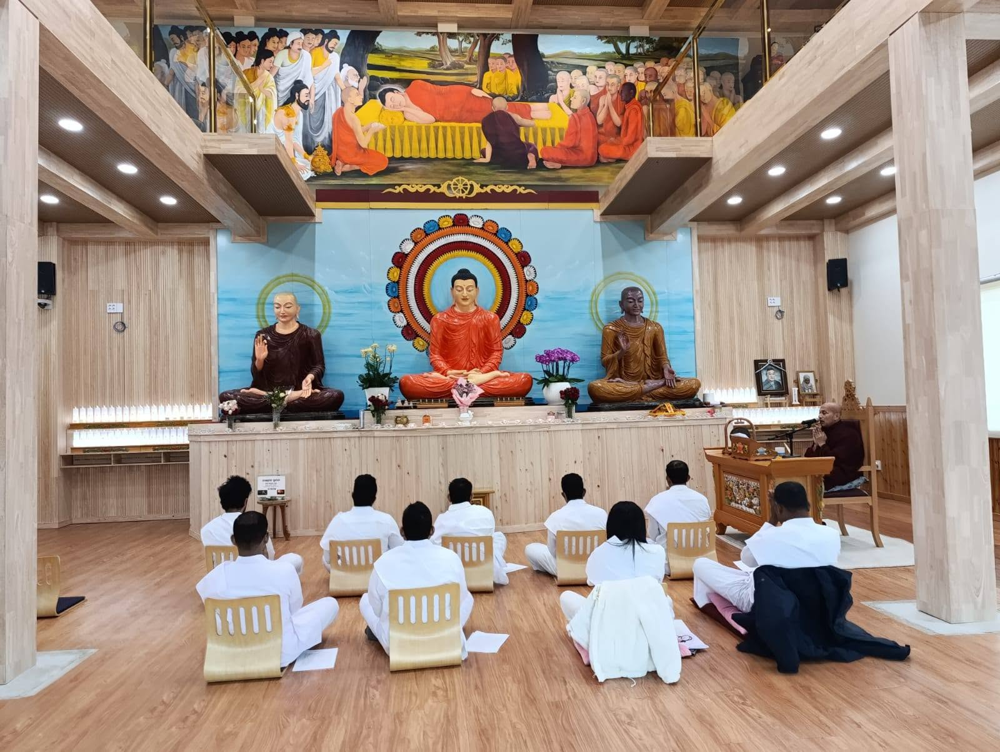
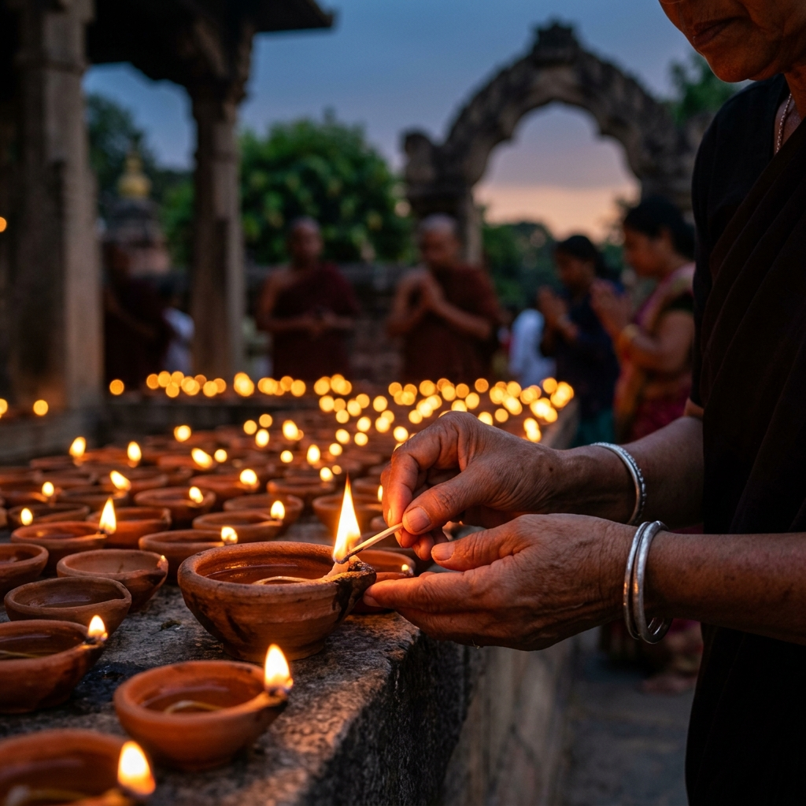
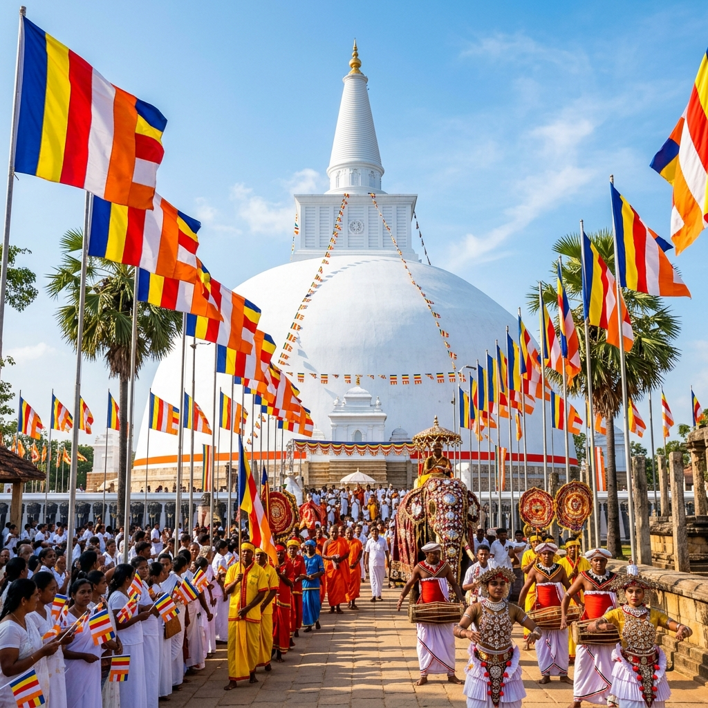
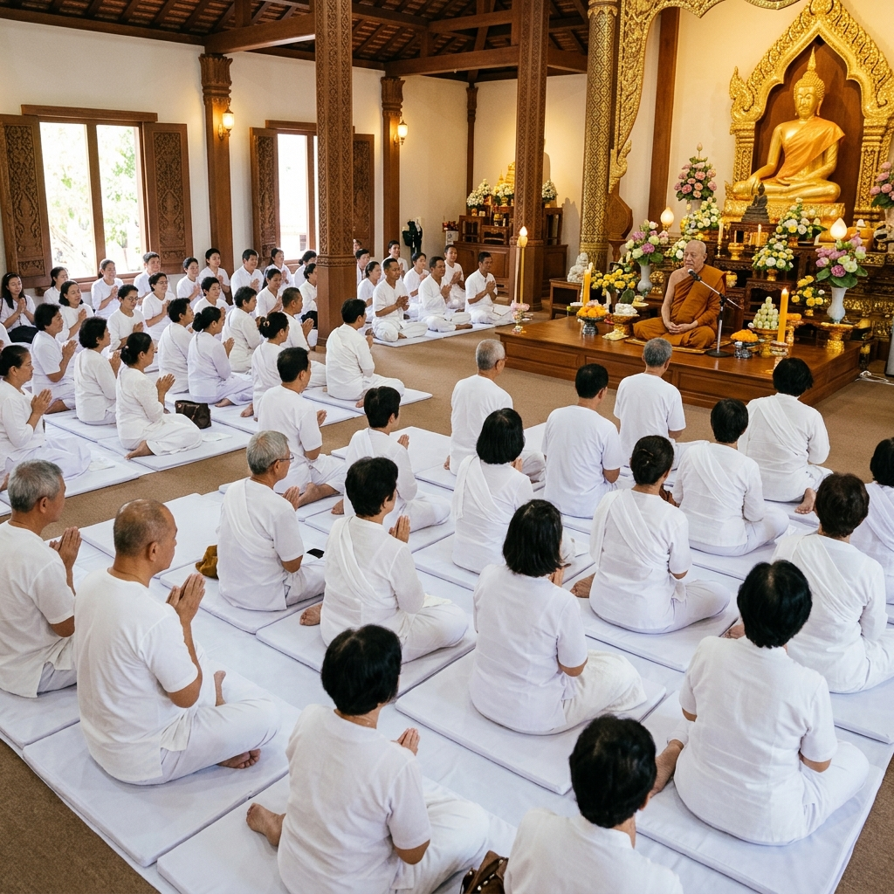
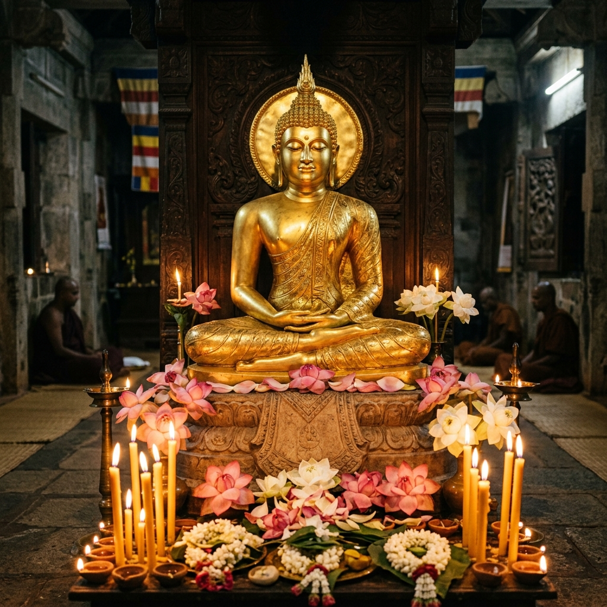
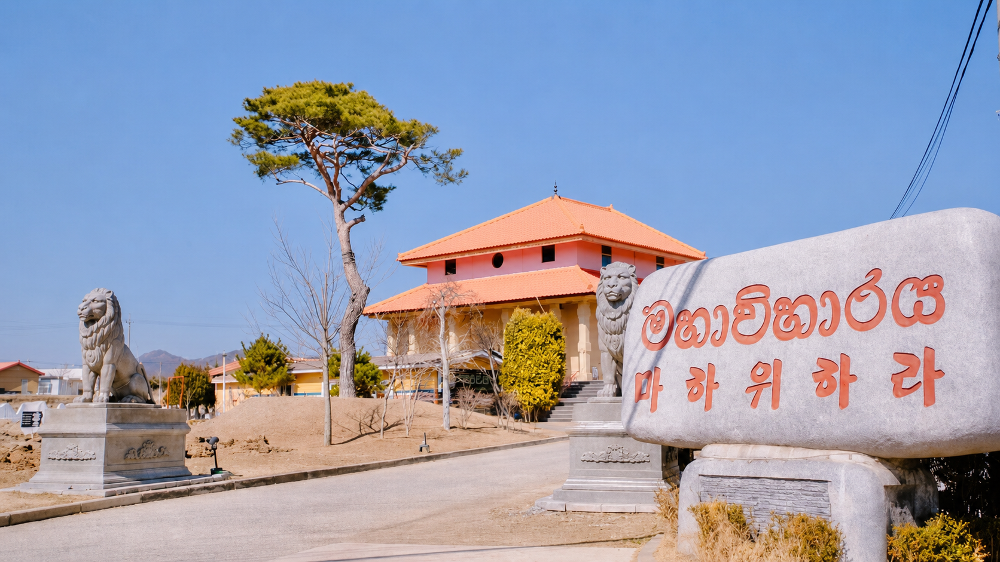

About Korea Sri Lanka Maha Viharaya
A sacred place of worship, culture, and community for Sri Lankans in South Korea.
Nurturing Spiritual Roots Abroad
Korea Sri Lanka Maha Viharaya is a Sri Lankan Buddhist temple in South Korea dedicated to supporting the spiritual and cultural needs of the Sri Lankan community. The temple serves as a peaceful place for worship, meditation, Dhamma learning, religious observances, and community connection.
Through Buddhist teachings and Sri Lankan traditions, the temple helps devotees maintain their religious identity while living abroad. It also creates a welcoming environment for families, students, workers, and friends to gather, learn, and participate in meaningful activities.

Our History
The "Korea Sri Lanka Maha Viharaya" is the first Sri Lankan temple built on its own land in South Korea. It was established in 2014 under the leadership of Ven. Dr. Thalgamuwe Dhammakitti Thero, a lecturer at Dongguk University, with the generous financial contributions of the Sri Lankan community. The temple was built after a very difficult journey, overcoming complex legal procedures, financial challenges, and even protests from some local residents. Today, the Mahavihara has become a central hub that brings together over ten thousand young Sri Lankans working in Korea, performing numerous religious and social services.
History of the Sacred Relics
- From Sri Dalada Maligawa: During the early difficult days of construction, a sacred relic was gifted with the blessings of the chief prelate of the Sri Dalada Maligawa (Temple of the Sacred Tooth Relic).
- From Baekunsa Temple (Daejeon): 17 relics dating back to the 7th century, which had been brought to Korea from Sri Lanka over 40 years ago, were offered to the Mahavihara by the Baekunsa Temple.
- From a Devotee in Kandy: Sacred relics that had been protected for seven generations were donated by a female lay devotee from Kandy.
- From a Thai Buddhist: On the day of the ceremony marking the completion of the roof, a Thai Buddhist devotee offered a sacred relic that had been passed down through their family.
Historical Gallery
Moments from our temple's journey and the venerated relics we protect.

Pahan Pooja
Lighting clay lamps at dusk

Temple Festival
Buddhist flags and celebrations

Dhamma Sermon
Devotees in white attire

Flower Offering
Altars decorated with lotus flowers
Our Mission
To preserve and promote Buddhist values, Sri Lankan cultural heritage, and community unity among Sri Lankans living in South Korea. We aim to inspire compassionate lives and spiritual resilience through the light of Buddha's teachings.
Our Vision
To become a peaceful spiritual and cultural center that connects faith, tradition, and community across generations. We envision a society guided by Buddhist principles of loving-kindness, mental clarity, and mutual respect.
Our Core Values
The pillars that guide our spiritual services and community interactions.
Faith
Strengthening spiritual life through Buddhist teachings and religious practices.
Compassion
Encouraging kindness, respect, and service to others in all activities.
Unity
Bringing the Sri Lankan community together in South Korea for mutual support and strength.
Heritage
Preserving Sri Lankan Buddhist culture, traditional ceremonies, and national identity.

A Home for the Sri Lankan Community
The temple is more than a place of worship. It is a community home where people gather for religious ceremonies, cultural events, educational programs, and social support.
Living and working far from home poses unique emotional and social challenges. Korea Sri Lanka Maha Viharaya acts as a comforting sanctuary and support network, organizing health camps, legal/employment advice connections, and counseling for Sri Lankan residents in South Korea.
Our Services
Serving the spiritual and social needs of the community.
Religious & Educational
We conduct daily live Pirith chanting, weekend Dhamma sermons, and Dhamma school for children. Additionally, we offer Pali language classes for Korean nationals interested in Buddhist scriptures.
Social Welfare
Through a dedicated foundation, we provide medical aid and blood donation drives for Sri Lankans in Korea. We also support underprivileged schools in Sri Lanka with equipment, construct tube wells with water filters, and donate medical equipment to hospitals.
Scholarships
Under the "Kasawathata Saviyak" project, we provide monthly scholarships to student monks and nuns pursuing higher education in Sri Lanka, supporting the future of the Sangha community.